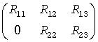

Intel® oneAPI Math Kernel Library Developer Reference - Fortran
Computes the generalized SVD of two upper triangular or trapezoidal matrices.
call stgsja(jobu, jobv, jobq, m, p, n, k, l, a, lda, b, ldb, tola, tolb, alpha, beta, u, ldu, v, ldv, q, ldq, work, ncycle, info)
call dtgsja(jobu, jobv, jobq, m, p, n, k, l, a, lda, b, ldb, tola, tolb, alpha, beta, u, ldu, v, ldv, q, ldq, work, ncycle, info)
call ctgsja(jobu, jobv, jobq, m, p, n, k, l, a, lda, b, ldb, tola, tolb, alpha, beta, u, ldu, v, ldv, q, ldq, work, ncycle, info)
call ztgsja(jobu, jobv, jobq, m, p, n, k, l, a, lda, b, ldb, tola, tolb, alpha, beta, u, ldu, v, ldv, q, ldq, work, ncycle, info)
call tgsja(a, b, tola, tolb, k, l [,u] [,v] [,q] [,jobu] [,jobv] [,jobq] [,alpha] [,beta] [,ncycle] [,info])
The routine computes the generalized singular value decomposition (GSVD) of two real/complex upper triangular (or trapezoidal) matrices A and B. On entry, it is assumed that matrices A and B have the following forms, which may be obtained by the preprocessing subroutine ggsvp from a general m-by-n matrix A and p-by-n matrix B:
where the k-by-k matrix A12 and l-by-l matrix B13 are nonsingular upper triangular; A23 is l-by-l upper triangular if m-k-l≥0, otherwise A23 is (m-k)-by-l upper trapezoidal.
On exit,
UH*A*Q = D1*(0 R), VH*B*Q = D2*(0 R),
where U, V and Q are orthogonal/unitary matrices, R is a nonsingular upper triangular matrix, and D1 and D2 are "diagonal" matrices, which are of the following structures:
If m-k-l≥0,
where
C = diag(alpha(k+1),...,alpha(k+l))
S = diag(beta(k+1),...,beta(k+l))
C2 + S2 = I
R is stored in a(1:k+l, n-k-l+1:n ) on exit.
If m-k-l < 0,
where
C = diag(alpha(k+1),...,alpha(m)),
S = diag(beta(k+1),...,beta(m)),
C2 + S2 = I
On exit,  is stored in a(1:m, n-k-l+1:n ) and R33 is stored
in b(m-k+1:l, n+m-k-l+1:n ).
The computation of the orthogonal/unitary transformation matrices U, V or Q is optional. These matrices may either be formed explicitly, or they may be postmultiplied into input matrices U1, V1, or Q1.
CHARACTER*1. Must be 'U', 'I', or 'N'.
If jobu = 'U', u must contain an orthogonal/unitary matrix U1 on entry.
If jobu = 'I', u is initialized to the unit matrix.
If jobu = 'N', u is not computed.
CHARACTER*1. Must be 'V', 'I', or 'N'.
If jobv = 'V', v must contain an orthogonal/unitary matrix V1 on entry.
If jobv = 'I', v is initialized to the unit matrix.
If jobv = 'N', v is not computed.
CHARACTER*1. Must be 'Q', 'I', or 'N'.
If jobq = 'Q', q must contain an orthogonal/unitary matrix Q1 on entry.
If jobq = 'I', q is initialized to the unit matrix.
If jobq = 'N', q is not computed.
INTEGER. The number of rows of the matrix A (m≥ 0).
INTEGER. The number of rows of the matrix B (p≥ 0).
INTEGER. The number of columns of the matrices A and B (n≥ 0).
INTEGER. Specify the subblocks in the input matrices A and B, whose GSVD is computed.
REAL for stgsja
DOUBLE PRECISION for dtgsja
COMPLEX for ctgsja
DOUBLE COMPLEX for ztgsja.
Arrays:
a(lda,*) contains the m-by-n matrix A.
The second dimension of a must be at least max(1, n).
b(ldb,*) contains the p-by-n matrix B.
The second dimension of b must be at least max(1, n).
If jobu = 'U', u(ldu,*) must contain a matrix U1 (usually the orthogonal/unitary matrix returned by ?ggsvp).
The second dimension of u must be at least max(1, m).
If jobv = 'V', v(ldv,*) must contain a matrix V1 (usually the orthogonal/unitary matrix returned by ?ggsvp).
The second dimension of v must be at least max(1, p).
If jobq = 'Q', q(ldq,*) must contain a matrix Q1 (usually the orthogonal/unitary matrix returned by ?ggsvp).
The second dimension of q must be at least max(1, n).
work(*) is a workspace array.
The dimension of work must be at least max(1, 2n).
INTEGER. The leading dimension of a; at least max(1, m).
INTEGER. The leading dimension of b; at least max(1, p).
INTEGER. The leading dimension of the array u .
ldu≥ max(1, m) if jobu = 'U'; ldu≥ 1 otherwise.
INTEGER. The leading dimension of the array v .
ldv≥ max(1, p) if jobv = 'V'; ldv≥ 1 otherwise.
INTEGER. The leading dimension of the array q .
ldq≥ max(1, n) if jobq = 'Q'; ldq≥ 1 otherwise.
REAL for single-precision flavors
DOUBLE PRECISION for double-precision flavors.
tola and tolb are the convergence criteria for the Jacobi-Kogbetliantz iteration procedure. Generally, they are the same as used in ?ggsvp:
tola = max(m, n)*|A|*MACHEPS,
tolb = max(p, n)*|B|*MACHEPS.
On exit, a(n-k+1:n, 1:min(k+l, m)) contains the triangular matrix R or part of R.
On exit, if necessary, b(m-k+1: l, n+m-k-l+1: n)) contains a part of R.
REAL for single-precision flavors
DOUBLE PRECISION for double-precision flavors.
Arrays, size at least max(1, n). Contain the generalized singular value pairs of A and B:
alpha(1:k) = 1,
beta(1:k) = 0,
and if m-k-l≥ 0,
alpha(k+1:k+l) = diag(C),
beta(k+1:k+l) = diag(S),
or if m-k-l < 0,
alpha(k+1:m)= diag(C), alpha(m+1:k+l)=0
beta(k+1:m) = diag(S),
beta(m+1:k+l) = 1.
Furthermore, if k+l < n,
alpha(k+l+1:n)= 0 and
beta(k+l+1:n) = 0.
If jobu = 'I', u contains the orthogonal/unitary matrix U.
If jobu = 'U', u contains the product U1*U.
If jobu = 'N', u is not referenced.
If jobv = 'I', v contains the orthogonal/unitary matrix U.
If jobv = 'V', v contains the product V1*V.
If jobv = 'N', v is not referenced.
If jobq = 'I', q contains the orthogonal/unitary matrix U.
If jobq = 'Q', q contains the product Q1*Q.
If jobq = 'N', q is not referenced.
INTEGER. The number of cycles required for convergence.
INTEGER.
If info = 0, the execution is successful.
If info = -i, the i-th parameter had an illegal value.
If info = 1, the procedure does not converge after MAXIT cycles.
Routines in Fortran 95 interface have fewer arguments in the calling sequence than their FORTRAN 77 counterparts. For general conventions applied to skip redundant or restorable arguments, see LAPACK 95 Interface Conventions.
Specific details for the routine tgsja interface are the following:
Holds the matrix A of size (m,n).
Holds the matrix B of size (p,n).
Holds the matrix U of size (m,m).
Holds the matrix V of size (p,p).
Holds the matrix Q of size (n,n).
Holds the vector of length n.
Holds the vector of length n.
If omitted, this argument is restored based on the presence of argument u as follows:
jobu = 'U', if u is present,
jobu = 'N', if u is omitted.
If present, jobu must be equal to 'I' or 'U' and the argument u must also be present.
Note that there will be an error condition if jobu is present and u omitted.
If omitted, this argument is restored based on the presence of argument v as follows:
jobv = 'V', if v is present,
jobv = 'N', if v is omitted.
If present, jobv must be equal to 'I' or 'V' and the argument v must also be present.
Note that there will be an error condition if jobv is present and v omitted.
If omitted, this argument is restored based on the presence of argument q as follows:
jobq = 'Q', if q is present,
jobq = 'N', if q is omitted.
If present, jobq must be equal to 'I' or 'Q' and the argument q must also be present.
Note that there will be an error condition if jobq is present and q omitted.